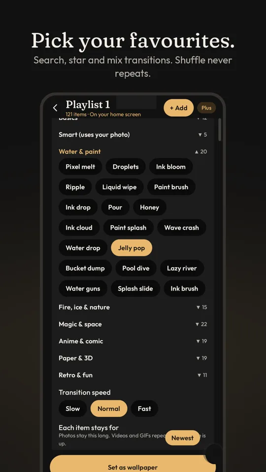

Ваши видео и фото как живые обои для Android.
Выберите любое видео, GIF или фото на телефоне и смотрите, как оно повторяется на главном экране. Соберите плейлист, и обои будут меняться сами, со 123 переходами между ними.
Бесплатно в Google PlayБез рекламы. Без аккаунта. Ваши файлы не покидают телефон.

Посмотрите в движении
123 перехода между вашими картинками





Что оно умеет
Видеообои
Любое видео или GIF с телефона, любой длины. Посмотрите цикл до установки, обрежьте и выберите, откуда начать.
Смена обоев
Плейлисты из видео, GIF и фото, которые меняются сами, с перемешиванием без повторов.
123 перехода
Вода, лава, стекло, песок, чёрная дыра, аниме, комикс, ретро и другие, с настоящей физикой.
Оживающие фото
Человек или питомец на фото дышит, моргает и тянется к вашему пальцу.
LoopPaper Studio
Оживите свои фото: плывущее небо, текущая вода, окна, загорающиеся ночью, ауры, аниме-эффекты и синемаграфы. 3 бесплатно.
Фото на ткани
Знамя, флаг, гобелен или вымпел, который качается при наклоне телефона, или театральный занавес, открывающийся при разблокировке. Выберите шёлк, бархат или холст и ветер от штиля до бури.
Часы за объектом
Стили часов как у флагманов — вокруг или за человеком на вашем фото.
Для складных телефонов
Разные плейлисты для внутреннего и внешнего экрана, режим книги и режим стола.
Бережёт батарею
Отдыхает, когда экран выключен, и может вставать на паузу в режиме энергосбережения.
Конфиденциально
Без рекламы, без аккаунта, без отслеживания. Ваши фото остаются на телефоне.
Вопросы
Как поставить видео на обои в Android?
Установите LoopPaper, нажмите «Выбрать», выберите любое видео или GIF на телефоне, посмотрите цикл в превью и нажмите «Установить обои». Ещё можно нажать «Поделиться» на видео в Галерее или Google Фото и выбрать LoopPaper.
LoopPaper бесплатный?
Да. Ставить любое видео, GIF или фото как живые обои можно бесплатно, без рекламы, водяных знаков и аккаунта. LoopPaper Plus — необязательная разовая покупка: безлимитные плейлисты, все 123 перехода и дополнительные эффекты. Пробный период на 7 дней начинается, только когда вы нажмёте «Начать пробный период», и никогда не превращается в подписку.
Могут ли обои меняться автоматически?
Да. Соберите плейлист из видео, GIF и фото, и LoopPaper будет сам переключать их с переходом между каждым.
Живые обои разряжают батарею?
LoopPaper отдыхает, когда экран выключен, и может вставать на паузу в режиме энергосбережения, поэтому работает только пока вы смотрите.
Мои фото куда-то загружаются?
Нет. Ваши файлы остаются на телефоне. LoopPaper никогда их не загружает, и всё, что он делает с фото, происходит на телефоне.